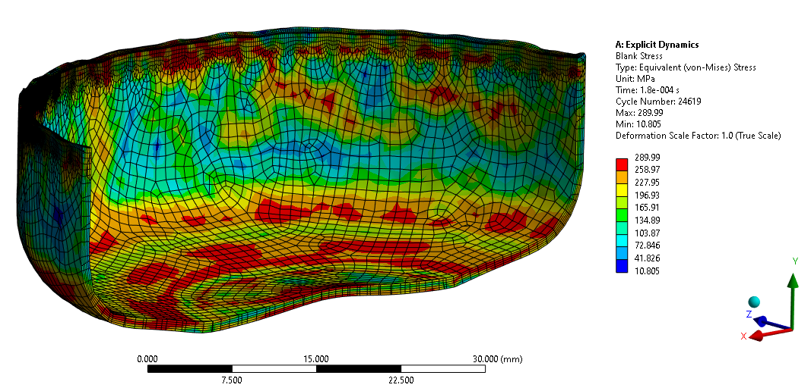
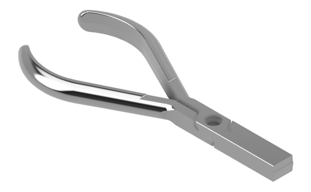
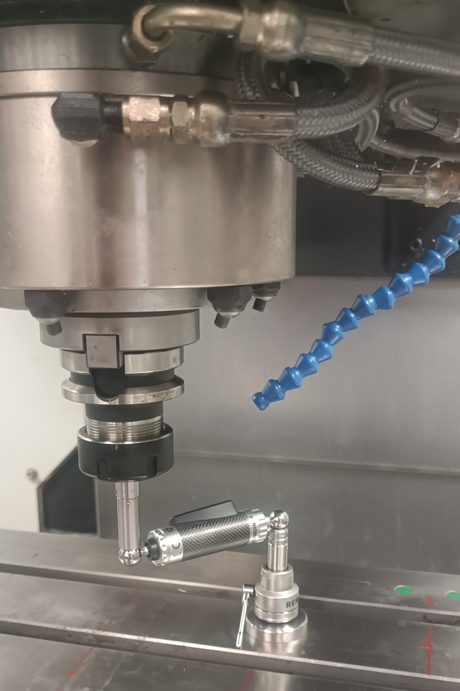
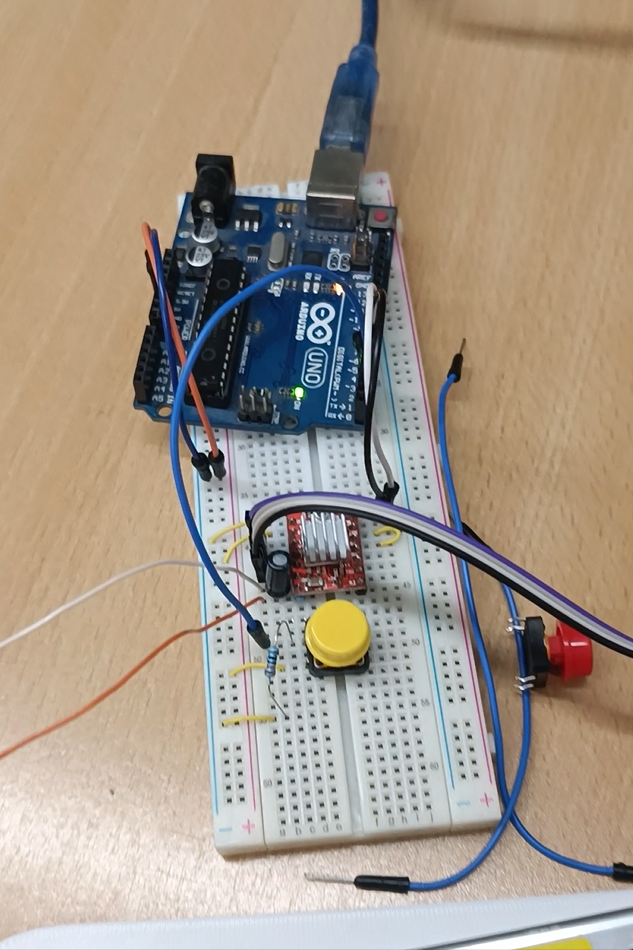
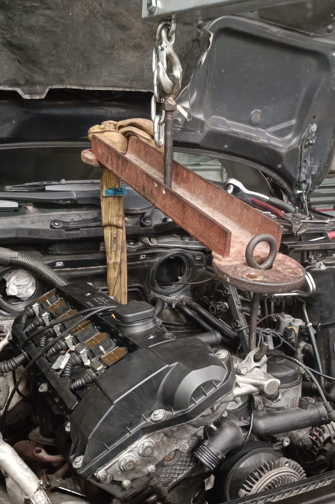
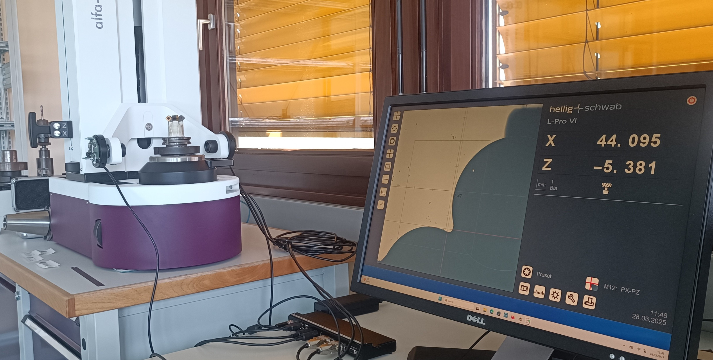
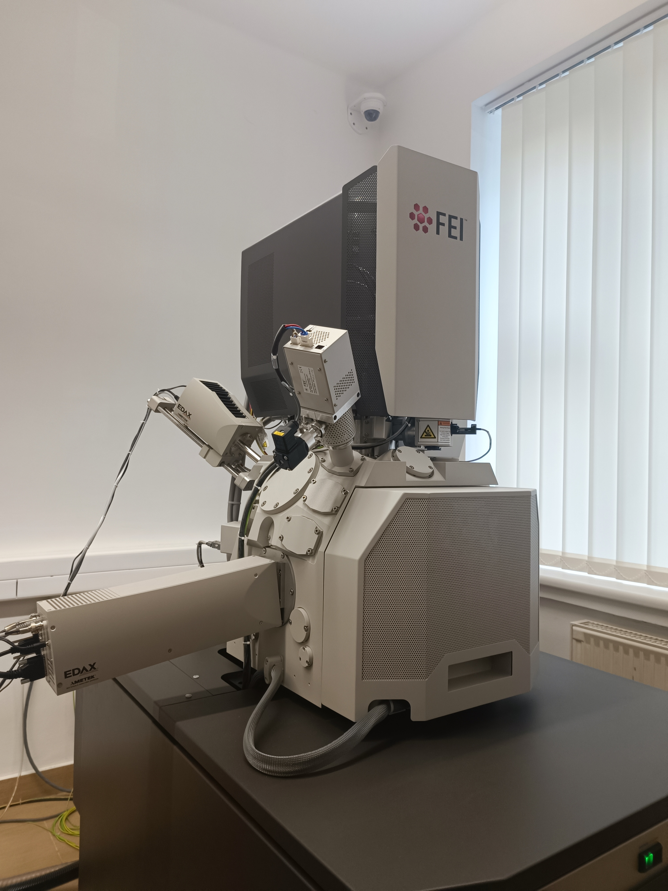
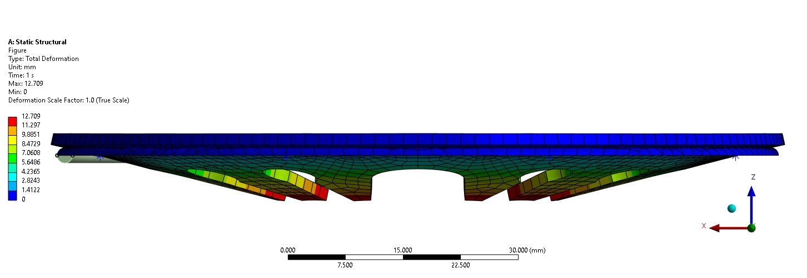

Research & Engineering
Projects
Hands-on projects spanning digital twins, additive manufacturing, structural analysis, and medical device optimization.

This isn’t just a single project; it’s a collection of moments, each with its own story. Hands-on work, technical drawings, lab experiments, etc.

Synchronized digital twin pipeline for the Robotics, bridging Fusion 360 CAD with URDF via Unity and Later with ROS2 and NVIDIA Isaac Sim.

As part of the Non-Linear Finite Element Methods course, I simulated a deep drawing process using Explicit Dynamics to predict material behavior under high-strain conditions.

Bachelor's thesis - optimization of orthodontic plier manufacturing utilizing CAD/CAM/CAE, ensuring EU MDR and ISO 13485 compliance. TDK 3rd Place.

Programming and managing robotic arms, VMMs, CMMs, and 3D optical scanning systems for high-precision inspection at ZALNER.

Design and build of a stepper motor controller — PCB design, firmware development, and mechanical integration for position-controlled actuation.

Hands-on vehicle servicing covering engine, brakes, suspension, and drivetrain — diagnostics and mechanical repair in a real workshop setting.

Full mechanical overhaul and calibration of a tool presetter, restoring it to precision metrology standards for CNC tool measurement.

Mechanical testing, microstructural analysis, and property evaluation of engineering materials — tensile, hardness, impact, and failure analysis.

A collection of structural, thermal, dynamic, and nonlinear FEM simulations completed during engineering studies — images & animations.